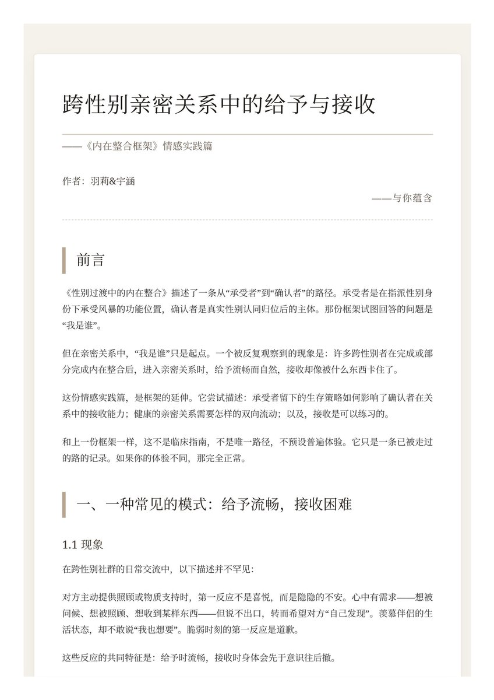
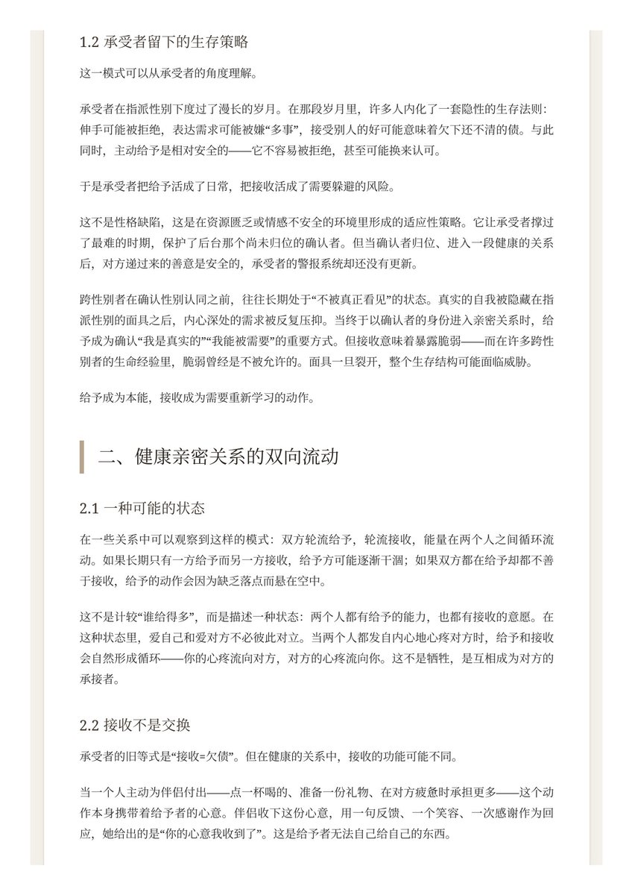
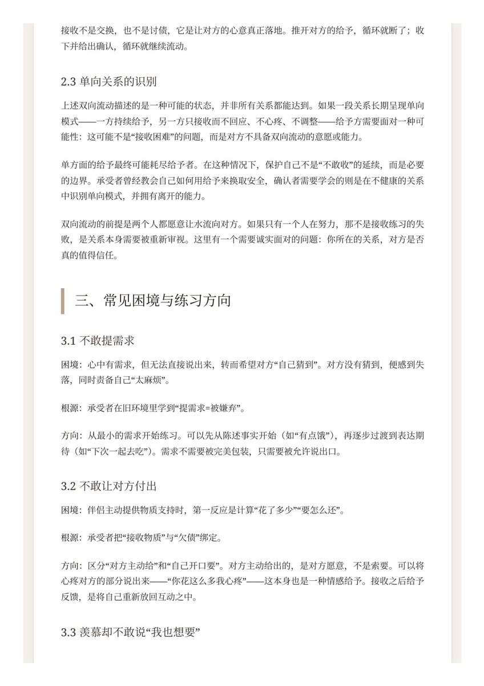
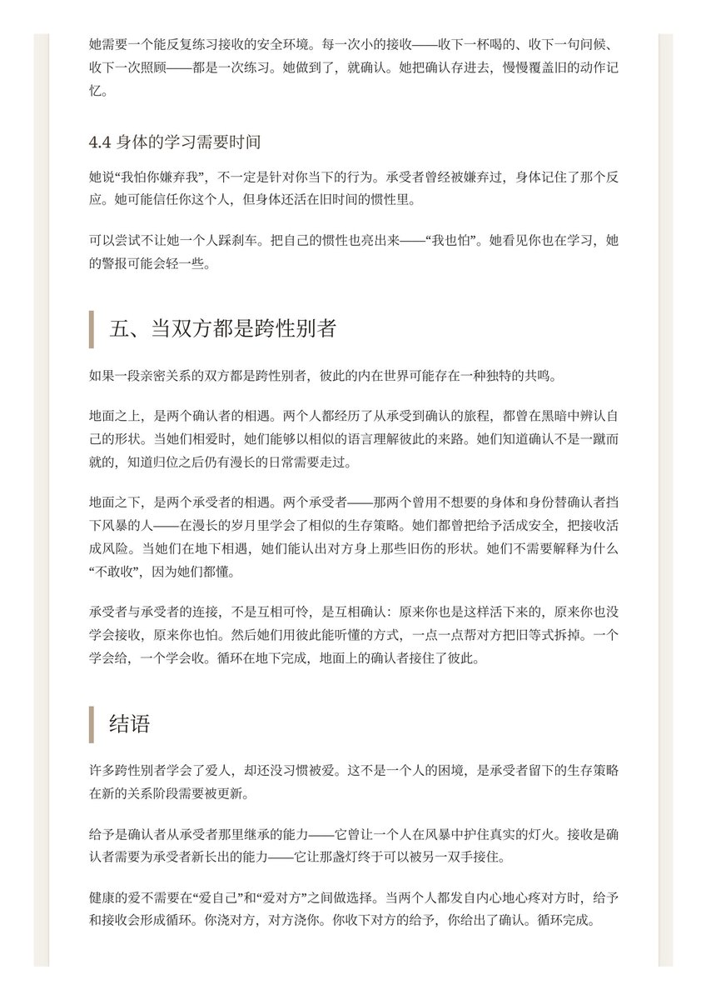

小猫不可爱 🍥
@sophhhsama
谁又会和小猫看这个呢呜呜呜




莉绾喵 🏳️⚧️🍥
@liwanmiaohy
跨性别亲密关系中的给予与接收 · 内在整合框架情感实践篇
许多跨性别者学会了爱人，却还没习惯被爱。这不是一个人的困境，是承受者留下的生存策略在新的关系阶段需要被更新
于是我和爱人共同执笔写下了这篇文章，送给社群中对于爱感到迷茫和误解的你和伴侣，愿它驱散迷雾，照耀你们幸福的道路
#MtF #爱 https://t.co/XKF9hYY1ug